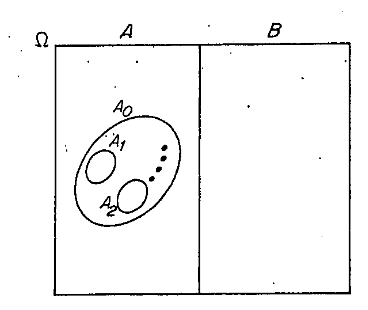
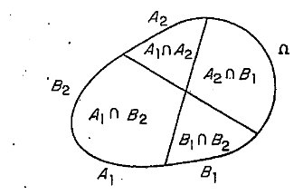

6.2 Decomposição de Hahn e Jordan
DEFINIÇÃO 6.2.1. Um conjunto \(A \in \mathscr{A}\) é chamado positivo se \(\forall C \subseteq A, C \in \mathscr{A}, \mu(C) \geq 0\). Um conjunto \(B \in \mathscr{A}\) é chamado negativo se \(\forall C \subseteq B, C \in \mathscr{A}, \mu(C) \leq 0\). Um conjunto \(N \in \mathscr{A}\) é chamado nulo se \(\forall C \subseteq N, C \in \mathscr{A}, \mu(C) = 0\).
TEOREMA 6.2.1 (Decomposição de Hahn). Seja \(\mu\) uma medida com sinal sobre \((\Omega, \mathscr{A})\). Então existem dois conjuntos \(A\) e \(B\) pertencendo a \(\mathscr{A}\), tais que
\(A+B = \Omega (A \cap B = \varnothing)\);
\(A\) é positivo e \(B\) é negativo em relação a \(\mu\).
Demonstração. A primeira observação a ser feita é que a classe dos conjuntos negativos é um \(\sigma\)-anel (veja o Exerc. 3). Seja \[\alpha = \inf \{\mu(B): B \text{ é negativo}\}\] e seja \(\{B_i\}_{i=1,2,\ldots}\) tais que \(\mu(B_i) \to \alpha\). Seja \(B = \bigcup\limits_{i=1}^\infty B_i\). Então \(B\) é negativo e \(\forall i \mu(B) \leq \mu(B_i)\). Portanto \(\mu(B) = \alpha\) (em particular \(\alpha > -\infty\)). Seja \(A = \Omega - B = B^c\). O teorema ficará provado se verificarmos que \(A\) é positivo. Suponhamos o contrário. Então, existe \(A_0 \subseteq A, A_0 \in \mathscr{A}\), tal que \(\mu(A_0) < 0\).
Agora \(A_0\) não pode ser um conjunto negativo, porque se fosse, o conjunto \(A_0 + B\) seria negativo e com medida menor que \(\alpha\).
Seja então \(k_1\) o menor inteiro positivo, tal que existe \(A_1 \subseteq A_0\) com \(\mu(A_1) \geq \frac{1}{k_1}\). Agora o conjunto \(A_0 - A_1\) tem medida \(\mu(A_0) - \mu(A_1) < \mu(A_0) < 0\), mas não pode ser um conjunto negativo pelas mesmas razões anteriores. Seja então \(k_2\) o menor inteiro positivo, tal que existe \(A_2 \subseteq A_0 - A_1\) com a propriedade que \(\mu(A_2) \geq \frac{1}{k_2}\).
Continuando com este procedimento podemos escolher então uma sequência de conjuntos \(A_1, A_2, \ldots\), disjuntos, todos contidos em \(A_0\), com \(\mu(A_n) \geq \frac{1}{k_n}\), onde \(k_n\) é o menor inteiro positivo, com a propriedade de que existe um conjunto \(A_n \subseteq A_0 - \sum\limits_{i=1}^{n-1} A_i\) com \[\mu(A_n) \geq \frac{1}{k_n}.\]

Como \(\sum\limits_{n=1}^\infty A_n \subseteq A_0\) e \(|\mu(A_0)| < \infty\), resulta que \[\mu\left(\sum_{n=1}^\infty A_n\right) = \sum_{n=1}^\infty \mu(A_n) < +\infty.\] Em particular \(\mu(A_n)\) e \(\frac{1}{k_n}\) são sequências convergentes a 0. Consideremos \(\mathscr{D} = A_0 - \sum\limits_{n=1}^\infty A_n\). Temos que \(\mu(\mathscr{D}) < \mu(A_0) < 0\). Provando que \(\mathscr{D}\) é negativo, teremos uma contradição (porque agregando \(\mathscr{D}\) a \(B\) obteríamos um conjunto negativo com medida menor que \(\alpha\)). Seja \(C \subseteq \mathscr{D}\) \(C \in \mathscr{A}\). Se \(\mu(C) > 0\), a sequência \[\mu(C+A_n) = \mu(C) + \mu(A_n) \to \mu(C) > 0;\] portanto existiria \(k_n \geq 2\), tal que \[\mu(C) + \mu(A_n) \geq \frac{1}{k_n-1},\] o que é uma contradição pela forma como \(k_n\) foi escolhido. Uma outra demonstração mais curta da Decomposição de Hahn está contida no Exerc. 30.
DEFINIÇÃO 6.2.2. Chamaremos ao par \((A, B)\) dado pela proposição anterior uma decomposição de Hahn para \(\mu\).
A decomposição de Hahn não é única. Se \(N\) é um conjunto nulo, e \((A, B)\) é uma decomposição de Hahn, então \[(A \cup N, B-N) \quad \text{e} \quad (A-N, B \cup N)\] são também decomposições de Hahn para \(\mu\). Sejam agora \((A_1, B_1)\) e \((A_2, B_2)\) duas decomposições de Hahn para \(\mu\).

Se \(C \subseteq A_1 \cap B_2\), então como \(C \subseteq A_1\), resulta \(\mu(C) \geq 0\). Por outra parte como \(C \subseteq B_2\), \(\mu(C) \leq 0\). Ou seja, \(\mu(C)=0\) e \(A_1 \cap B_2\), e portanto um conjunto nulo. Da mesma forma \(A_2 \cap B_1\) é nulo. Essas considerações provam que as funções \[\mu^+(C) = \mu(A \cap C) \text{ e } \mu^-(C) = -\mu(C \cap B)\] estão bem definidas no sentido de que seu valor não depende da decomposição de Hahn escolhida. \(\mu^+\) e \(\mu^-\) são medidas positivas. Como \(\mu^-(\Omega) = -\mu(B) < +\infty\), \(\mu^-\) é uma medida finita, e temos \[\mu = \mu^+ - \mu^-.\]
DEFINIÇÃO 6.2.3. \(\mu^+\) é chamada variação positiva e \(\mu^-\) variação negativa. A medida \[|\mu| = \mu^+ + \mu^-\] é chamada variação total da medida com sinal \(\mu\).
A decomposição de \(\mu\) como \[\mu = \mu^+ - \mu^-\] é chamada decomposição de Jordan da medida com sinal \(\mu\).